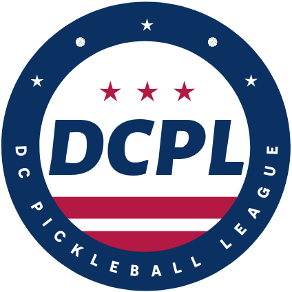
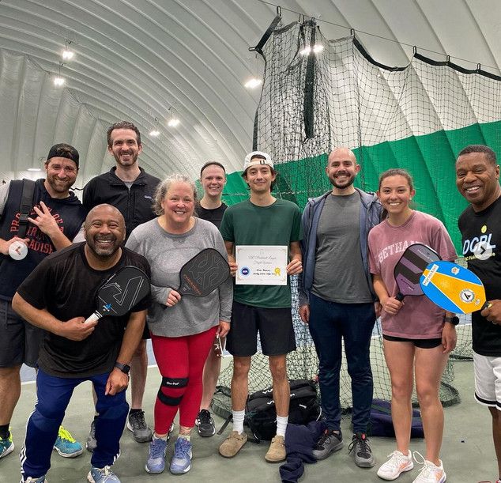
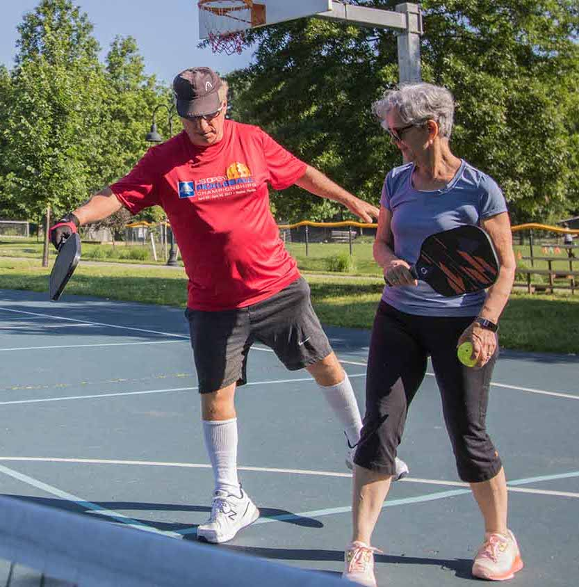

DC Pickleball League
The DC Pickleball League (DCPL) organizes pickleball fun in the Washington DC area! We welcome you to join our leagues, tournaments, clinics,
and open play sessions. Be part of the vibrant DC pickleball community!
Join our mailing list for weekly updates
New Spring Leagues!
- May. 1 - May. 29, Friday Indoor Leagues at WTEF, 5 weeks, 6:30pm-9:30pm.
- Apr. 18 - May. 9, Saturday Indoor Leagues at Rock Creek, 4 weeks, 4:15pm-7:00pm.
- Apr. 20 - May. 11, Monday Social League at Rock Creek, 4 weeks, 5:30-7:15pm.
- Apr. 20 - May. 11, Monday Competitive League at Rock Creek, 4 weeks, 7:15-10:00pm.
- Apr. 22 - May. 13, Wednesday Social League at Rock Creek, 4 weeks, 5:30-7:15pm.
- Apr. 22 - May. 13, Wednesday Competitive League at Rock Creek, 4 weeks, 7:15-10:00pm.
Upcoming DCPL events
Follow the links for more information or to register for each event. Email us at
wdcpickleball@gmail.com with any questions.
- Mar. 27 - Apr. 24, Friday Indoor Leagues at WTEF, 5 weeks, 6:30pm-9:30pm.
- Apr. 18 - May. 9, Saturday Indoor Leagues at Rock Creek, 4 weeks, 4:15pm-7:00pm.
- Apr. 20 - May. 11, Monday Social League at Rock Creek, 4 weeks, 5:30-7:15pm.
- Apr. 20 - May. 11, Monday Competitive League at Rock Creek, 4 weeks, 7:15-10:00pm.
- Apr. 22 - May. 13, Wednesday Social League at Rock Creek, 4 weeks, 5:30-7:15pm.
- Apr. 22 - May. 13, Wednesday Competitive League at Rock Creek, 4 weeks, 7:15-10:00pm.
- Apr. 25, Saturday Outdoor Clinics for Beginners & Adv. Beginners at Bridge District, 9:00-10:30am.
- Apr. 25, Saturday Indoor Clinics for Beginners & Adv. Beginners at Rock Creek, 2:15-3:45pm.
- Apr. 26, Sunday Skill Spotlight at Rock Creek Outdoors (Low Intermediate 3.0-3.3), 9:00-10:30am.
- Apr. 26, Sunday Skill Spotlight at Rock Creek Outdoors (Intermediare 3.3-3.7), 10:30am-12:00pm.
- May. 1 - May. 29, Friday Indoor Leagues at WTEF, 5 weeks, 6:30pm-9:30pm.
Current Ladder League Standings
Ladder standings last updated April 20.
April Ladder League Standings
Winter (February-March) Ladder League Standings
Winter (January) Ladder League Standings
Winter (December) Ladder League Standings
Previous Ladder League Standings
Skill Level Assessment Resources
If you have played in recent DCPL scored events, you can look up an estimate of your skill level rating here:
If you are new to our events and need a preliminary rating, use these resources to self-assess
your skill level (on a 1.0 to 5.0 scale):
Ladder Leagues
DC Pickleball League is offering our next multi-week ladder leagues beginning April 18 (Saturday indoor league), April 20 (Monday outdoor leagues), and April 22 (Wednesday outdoor leagues)
at Rock Creek.. For more information, contact us at
dcpickleballleague@gmail.com,
or register using the links at the top of this page.

Our shootout ladder leagues are designed for you to play multiple games
with players of similar skill level in a fun and competitive environment
while climbing up the ladder as you improve across the season!
We offer both "Social" leagues and "Competitive" leagues according to your
interests. The Social leagues are intended for advanced beginners and low intermediate
players (2.5-3.3 skill level) and consist of a one hour "shootout" round-robin
session amongst 4-5 players, plus 30 minutes of open play each week. The
Competitive leagues are for intermediate and advanced players (3.4-5.0+ skill level) and
consist of a two-hour, double round-robin format plus 45 minutes of open
play each week.
Ladder league rankings are updated each week based on your performance in
the round-robin events. As you play each week, your ladder ranking will become
more accurate, and your matches more competitive.
While our leagues focus on doubles pickleball play, you do not need a
partner, and there is no need for a substitute if you miss a week! One of
the benefits of our shootout ladder league format is that players can miss
a week and not be punished in their ladder ranking -- not that anyone would
miss a week of fun, right?
Lessons & Clinics

Whether you are a beginner, intermediate, or advanced amateur player, we offer lessons and clinics tailored to your skill level and needs.
Our lessons and clinics are taught by our Certified Coach Steve Valiant. Steve
has been playing in pickleball tournaments and winning medals across the U.S. for more than 10 years. He has helped hundreds of beginners and more advanced
players to play effectively in recreational and tournament play. His knowledge, patience, and encouragement will help you to improve your game.
Introductory and intermediate-level classes and clinics are offered at
several outdoor DC courts, weather permitting. Private and semi-private lessons are also available throughout the week.
To sign up for any of these offerings, please email wdcpickleball@gmail.com. Steve and his colleague Maya Ben-David will schedule
you for one of the upcoming sessions or arrange a convenient lesson time. Bring your paddle, if you have one,
or borrow one from us for the lesson!
We hope to see you on the pickleball court!
Contact Us
Contact us via email at
wdcpickleball@gmail.com. If you'd like to be added to our weekly email update list,
submit this form.
Our website: https://wdcpickleball.com/
Our Instagram: instagram.com/dcpickleballleague
Our events take place at these venues:
Rock Creek Tennis Center
5220 16th St NW, Washington, DC 20011
Washington Tennis & Education Foundation
200 Stoddert Pl, Washington, DC 20019
{kind=link}
{kind=link}